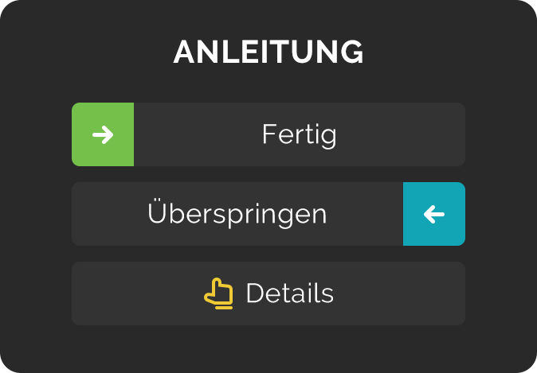

F: Wie funktioniert Productive? mehr... weniger...
A: Productive unterstützt dich dabei, Gewohnheiten zu entwickeln. Du kannst deine Zeit planen, deine Fortschritte verfolgen und Erfolge feiern.
Auf dem Bildschirm "Heute" siehst du die geplanten Gewohnheiten für den aktuellen Tag und den aktuellen Tagesabschnitt.
Durch Wischen nach rechts markierst du Gewohnheiten als fertig. Wenn du alle anstehenden Gewohnheiten eines Tages auf fertig gesetzt hast, hast du einen perfekten Tag erreicht. Eine Serie von perfekten Tagen zu schaffen kann dich motivieren und dein Leben Stück für Stück besser machen.
F: Wie funktionieren Serien? mehr... weniger...
A: Immer wenn du eine Gewohnheit rechtzeitig als fertig markierst, verlängert sich die Serie für diese Gewohnheit. Wenn du eine Gewohnheit überspringst, wird die Serie nicht unterbrochen, aber auch nicht verlängert. Wenn du eine Gewohnheit verpasst (also weder als fertig noch als übersprungen markierst), wird die Serie unterbrochen.
Wenn eine Gewohnheit für den Morgen und den Abend geplant ist, muss sie zweimal abgearbeitet werden, damit die Serie weitergeht.
Unter "Statistik" siehst du, wie deine Serien wachsen, wenn du alle für einen Tag geplanten Gewohnheiten als fertig markierst und einen perfekten Tag schaffst.
F: Wann sollte ich etwas überspringen? mehr... weniger...
A: Überspringen solltest du eine Gewohnheit nur aus guten Gründen, z. B. wenn du den Müll nicht rausbringen kannst, weil du im Urlaub bist. Durch das Überspringen wird zwar die Serie nicht unterbrochen, aber du erreichst keinen perfekten Tag.
Wenn eine Gewohnheit für einen bestimmten Tag geplant ist und du sie nicht als fertig oder übersprungen markierst, wird sie automatisch auf verpasst gesetzt. Verpasste Gewohnheiten beenden deine Serie und führen dazu, dass die Meldung "Überfällig" angezeigt wird, wenn die Gewohnheit das nächste Mal ansteht.
Wöchentliche und monatliche Gewohnheiten müssen an den Tagen, an denen du sie nicht erledigst, nicht übersprungen werden.
F: Wie behalte ich schlechte Gewohnheiten im Auge? mehr... weniger...
A: A: Schlechte Gewohnheiten kannst du genau wie gute nachverfolgen.
Nehmen wir an, du möchtest nicht mehr als zwei Tage in der Woche Junkfood essen. Dann kannst du einfach die Gewohnheit "Kein Junkfood" für fünf Tage in der Woche ansetzen und sie dann an den Tagen, an denen du darauf verzichtest, als fertig markieren.
F: Wie kann ich vergangene Tage bearbeiten? mehr... weniger...
A: Du kannst dir vergangene Tage anzeigen lassen, indem du auf dem Bildschirm "Heute" oben auf das Datum tippst, den Kalender unter "Statistik" benutzt oder die Details einer Gewohnheit aufrufst, indem du sie antippst.
Denk daran, dass du eine Gewohnheit nur unter dem Tag bearbeiten kannst, an dem sie erstellt wurde.
F: Wie funktionieren Erinnerungen? mehr... weniger...
A: Unter "Menü > Erinnerungen" kannst du allgemeine Erinnerungen für jeden Tagesabschnitt und eine Zusammenfassung für das Ende des Tages einstellen.
Außerdem kannst du für einzelne Gewohnheiten zeitlich festgelegte Erinnerungen einstellen. Diese Erinnerungen werden nur an den Tagen gesendet, für die diese Gewohnheit angesetzt ist, und nur wenn du sie nicht bereits als fertig oder übersprungen markiert hast.
PREMIUM
Productive Premium ist ein kostenpflichtiges Abo, mit dem du beliebig viele Gewohnheiten erstellen kannst.
Ende der Probephase und Aboverlängerung
Sobald die Probephase beendet ist, rechnet Google Play automatisch die volle Abogebühr über die Kreditkarte ab, die der Nutzer beim Kauf angegeben hat, und wiederholt diesen Vorgang am Ende jedes weiteren Abozeitraums. Du kannst das Abo in der Probephase jederzeit beenden. In diesem Fall bleibt das Abo nur bis zum Ende der Probephase aktiv und es erfolgt keine automatische Verlängerung durch Google Play. Dein Abo endet dann am Ende der Probephase und Google Play bucht kein Geld ab.
Kündigung des Abos
Google-Play-Abos werden automatisch verlängert, bis du das Abo beendest. Das Löschen der App führt nicht automatisch zur Kündigung. Du kannst den Status all deiner Abos im Google Play Store einsehen und Abos kündigen, indem du "Menü > Abos" antippst. Zu dieser Seite kommst du auch direkt über den Link http://play.google.com/store/account/subscriptions oder wenn du auf einem Computer play.google.com aufrufst und "Meine Abos" im Menü auf der linken Seite anklickst.
Wenn du ein Abo kündigst, bietet Google Play keine Rückerstattung für den aktuellen Zahlungszeitraum an. Stattdessen hat der Nutzer bis zum Ende dieses Zeitraums Zugang zu seinem bereits gekündigten Abo. Danach wird das Abo beendet.
Löschen der App
Wenn du eine App löschen möchtest, mit der von dir gekaufte Abos zusammenhängen, erhältst du eine Benachrichtigung von der Play-Store-App, die dich über deine aktiven Abos informiert. Wenn du mit dem Löschen fortfahren möchtest, wird zwar die App entfernt, aber die Abos bleiben aktiv und werden weiter abgerechnet. Die mit einer App zusammenhängenden Abos kannst du jederzeit unter "Meine Apps und Spiele" in der Play-Store-App kündigen.
Benachrichtigungen
Unter "Einstellungen > Benachrichtigungen > App-Benachrichtigungen" kannst du jederzeit die Benachrichtigungen abschalten. Einfach die App Productive antippen und den Schalter betätigen, um Pushnachrichten auszuschalten.
Support
Falls du Fragen oder Anmerkungen hast, kannst du uns gerne unter productive-android@bendingspoons.com kontaktieren.
Alle Inhalte dieser App, wie Text, Grafiken und Bilder sind Eigentum von Apalon oder dessen Inhaltsanbietern und durch US-amerikanisches und internationales Recht geschützt. Logos und Namen sind Handelsmarken von Apalon und dessen Tochtergesellschaften und Partnern.
EULA | Datenschutz | Datenschutzinfo
Personalize Your Ad Experience © 2019 IAC Search & Media Technologies Limited. Alle Rechte vorbehalten. Die Firmensoftware beinhaltet den hier aufgeführten Open-Source-Code.